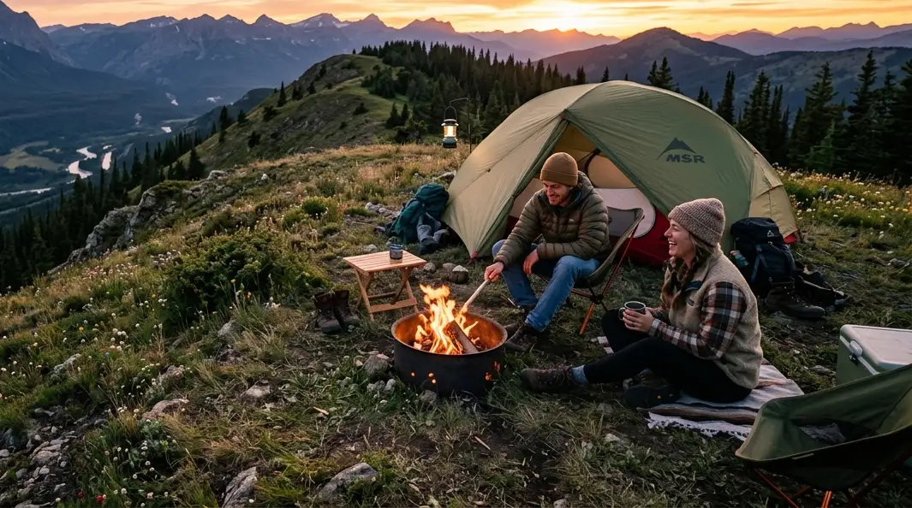

Evolusi area perkemahan modern kini memprioritaskan sanitasi bersih dan kemudahan akses kelistrikan bagi para pengunjungnya. (Ilustrasi: Unsplash)
Evolusi area perkemahan modern kini memprioritaskan sanitasi bersih dan kemudahan akses kelistrikan bagi para pengunjungnya. (Ilustrasi: Unsplash)
Banyak orang menunda keinginan untuk kembali ke alam karena dibayangi oleh stigma masa lalu: tidur tidak nyaman, udara menusuk tulang, tidak ada tempat untuk buang air yang higienis, dan terputus total dari peradaban karena tidak ada listrik. Namun, buang jauh-jauh bayangan buruk tersebut. Kini, industri ekowisata di dataran tinggi telah bertransformasi secara radikal untuk menjawab kebutuhan masyarakat modern.
Saat Anda mengetikkan pencarian panjang Sewa Ground Camping dengan Toilet Bersih dan Area Kemah Batu dengan Colokan Listrik Terlengkap, Anda sebenarnya sedang mendefinisikan sebuah standar liburan era baru yang disebut sebagai Comfort Camping. Kota Batu, yang diberkahi dengan perbukitan tropis menawan dan suhu udara sejuk, telah mempersiapkan infrastrukturnya dengan sangat matang. Artikel ini akan membedah mengapa fasilitas sanitasi dan akses kelistrikan menjadi sangat fundamental, serta bagaimana Anda bisa mendapatkan paket wisata *all-in* yang memanjakan tersebut tanpa harus menguras kantong.
1. Evolusi Wisata Alam: Dari Survival Menjadi Comfort Camping
Dekade lalu, berkemah adalah domain eksklusif bagi anggota pramuka atau mahasiswa pecinta alam yang dilatih untuk bertahan hidup (*survival*) dengan kondisi seminimal mungkin. Mereka dilatih menggali parit, mencari kayu bakar basah, dan buang hajat di sembarang semak. Namun, pergeseran budaya terjadi. Masyarakat kota, mulai dari *digital nomad*, pekerja kantoran, hingga keluarga muda, membutuhkan ruang pelarian hijau untuk mengusir penat (*burnout*) tanpa harus mengikuti simulasi militer yang menyiksa.
Pergeseran inilah yang melahirkan konsep *Comfort Camping* atau kemah nyaman. Pengelola lahan secara perlahan mulai menanamkan investasi besar-besaran untuk meratakan tanah berumput, menarik kabel instalasi dari jaringan PLN, hingga membangun sarana MCK permanen di tengah hutan pinus. Alam kini bukan untuk ditaklukkan, melainkan untuk dinikmati dengan cara yang paling relaks.
2. Toilet Bersih: Harga Mati untuk Liburan Keluarga
Jika ada satu alasan utama yang membuat seorang ibu enggan mengajak balita atau anak perempuannya berkemah, hal tersebut pasti bermuara pada urusan toilet.
Standar Sanitasi Modern di Alam Bebas
Mencari Sewa Ground Camping dengan Toilet Bersih bukan lagi sekadar mencari kakus darurat bertutup seng. Provider berkualitas tinggi di Batu telah membangun belasan bilik toilet permanen berbahan keramik. Di dalamnya, Anda akan menemukan kloset duduk (*flushing*), lantai yang rutin disikat bersih oleh petugas kebersihan (cleaning service), pencahayaan lampu LED yang terang benderang di malam hari, hingga yang paling mewah: ketersediaan fasilitas pemanas air (*water heater*). Anda tidak perlu lagi menggigil kedinginan saat harus membilas tubuh atau mengambil air wudu di subuh yang membeku.
BACA JUGA (Fasilitas Kemah):
3. Pentingnya Area Kemah dengan Colokan Listrik Terlengkap
Bagian terpenting kedua dari kueri panjang Anda adalah ketersediaan sumber daya listrik. Alam memang indah, namun di tahun 2026, terputus sepenuhnya dari arus komunikasi justru bisa memicu kecemasan baru.
Menunjang Kebutuhan Gaya Hidup Digital
Kawasan Area Kemah Batu dengan Colokan Listrik Terlengkap dibangun untuk memastikan Anda tetap terhubung. Listrik di area kemah tidak hanya berfungsi untuk mengisi daya (*charging*) *smartphone* atau kamera guna menangkap momen *sunrise* dan *city light*. Keberadaan stop kontak ini sangat krusial bagi kelompok *digital nomad* yang harus membuka laptop sejenak untuk membalas email klien, bagi ayah yang harus memompa kasur angin (inflatable mattress) menggunakan pompa elektrik, atau bagi keluarga yang harus memasak MPASI anak menggunakan alat pemanas elektrik portabel. Beberapa lansia bahkan menggunakan aliran listrik ini untuk menyalakan mesin terapi tidur ringan (CPAP) di malam hari.

Jalur instalasi yang rapi dan lahan parkir yang memadai memudahkan pengunjung untuk langsung menikmati fasilitas setibanya di lokasi. (Dokumentasi: Batu Sunrise Camp)4. Kemudahan Akses Kendaraan dan Hiburan Outbound
Liburan dengan fasilitas yang komplit juga harus diimbangi dengan kemudahan transportasi dan ragam aktivitas di lokasi.
Jalur Aman untuk Mobil, Motor, dan Campervan
Perbukitan di Kota Batu menawarkan kontur tanah yang sangat bersahabat bagi Anda yang gemar melakukan road trip. Infrastruktur aspal makadam yang mulus memastikan bahwa mobil MPV, *city car*, rombongan motor *touring*, atau bahkan modifikasi mobil *campervan* yang berdimensi besar dapat merapat langsung ke titik perkemahan. Anda bisa memarkirkan mobil persis di sebelah tanah lapang tempat tenda didirikan (*Park & Camp*), sehingga proses bongkar muat koper, galon air, atau alat masak (*nesting*) tidak perlu menguras keringat.
Pusat Pariwisata Outbound Terpadu
Daya tarik kawasan Batu tidak pernah berdiri sendiri. Setelah Anda selesai beristirahat di tenda, area sekitarnya adalah episentrum pariwisata yang sangat kaya. Sangat mudah bagi rombongan untuk menyisipkan aktivitas wisata *outbound*, *fun games* kelompok, atau bahkan menyewa armada Jeep 4x4 untuk berkeliling membelah *track* berlumpur di hutan pinus. Integrasi yang dinamis ini menjadikan akhir pekan Anda sarat dengan pacuan adrenalin yang menyenangkan.
5. Batu Sunrise Camp: Solusi Lengkap Tanpa Repot
Jika Anda mencari satu lokasi yang merangkum seluruh kriteria Sewa Ground Camping dengan Toilet Bersih dan Area Kemah Batu dengan Colokan Listrik Terlengkap, Batu Sunrise Camp adalah destinasi teratas yang patut dituju. Area ini dikelola dengan orientasi keamanan VIP.
Pihak manajemen telah mendirikan deretan tenda *double layer* berbahan tebal (anti embun dan angin) yang siap Anda tiduri. Instalasi jaringan kabel listrik ditarik secara profesional dengan sistem *grounding* yang aman dari cipratan air hujan. Selain itu, Anda mendapatkan akses eksklusif ke area komunal berkapasitas besar, *fire pit* untuk api unggun, dan tentunya panorama City Light Malang Raya yang menyala gemerlap di bawah sana saat senja mulai turun.
BACA JUGA (Efisiensi Biaya):
6. Tips Memaksimalkan Penggunaan Colokan Listrik di Tenda
Meskipun pihak *campground* telah menyediakan akses kelistrikan, Anda harus menjadi pengunjung yang cerdas dan taat aturan keselamatan:
- Bawa Kabel Rol (Extension) Berkualitas: Stop kontak biasanya dipasang di tiang penyangga yang berada di luar atau di teras tenda. Bawalah kabel olor dengan panjang 3-5 meter berstandar SNI agar Anda bisa menarik daya masuk ke dalam ruang tenda dengan aman.
- Perhatikan Kapasitas Watt: Jangan menyalakan alat masak seperti kompor induksi, *rice cooker* kapasitas besar, atau *hair dryer* listrik yang memakan daya ribuan watt secara bersamaan, karena bisa menyebabkan MCB *campground* anjlok. Gunakan listrik hanya untuk elektronik esensial (*charger*, kipas angin kecil, atau lampu tenda).
- Waspada Embun dan Hujan: Pastikan seluruh kepala *charger* dan colokan listrik diangkat dari permukaan lantai tenda. Embun yang merembes di malam hari bisa menyebabkan korsleting ringan jika menyentuh sirkuit yang terbuka.
7. Kesimpulan
Kemewahan sejati dari liburan masa kini adalah kemampuan untuk menyatu dengan keasrian alam tanpa harus melepaskan kebutuhan dasar kebersihan dan konektivitas. Mencari Sewa Ground Camping dengan Toilet Bersih dan Area Kemah Batu dengan Colokan Listrik Terlengkap adalah investasi logis bagi Anda yang mementingkan quality time bersama keluarga atau komunitas. Dengan mempercayakan liburan Anda kepada pengelola berstandar tinggi seperti Batu Sunrise Camp, Anda bisa mendatangi lokasi menggunakan mobil secara mudah, mengisi penuh baterai gadget Anda untuk menangkap momen sunrise, membilas tubuh di bawah pancuran air hangat, dan tertidur pulas di atas kasur tenda yang empuk. Inilah seni *healing* yang paripurna.